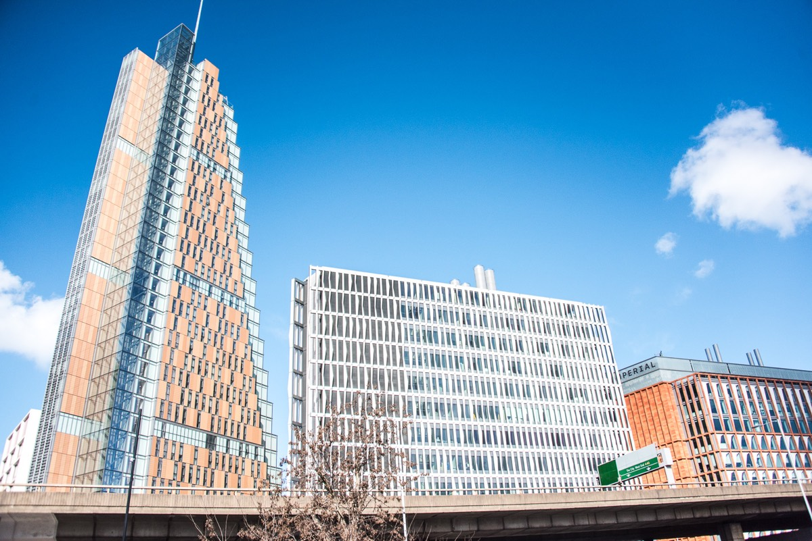
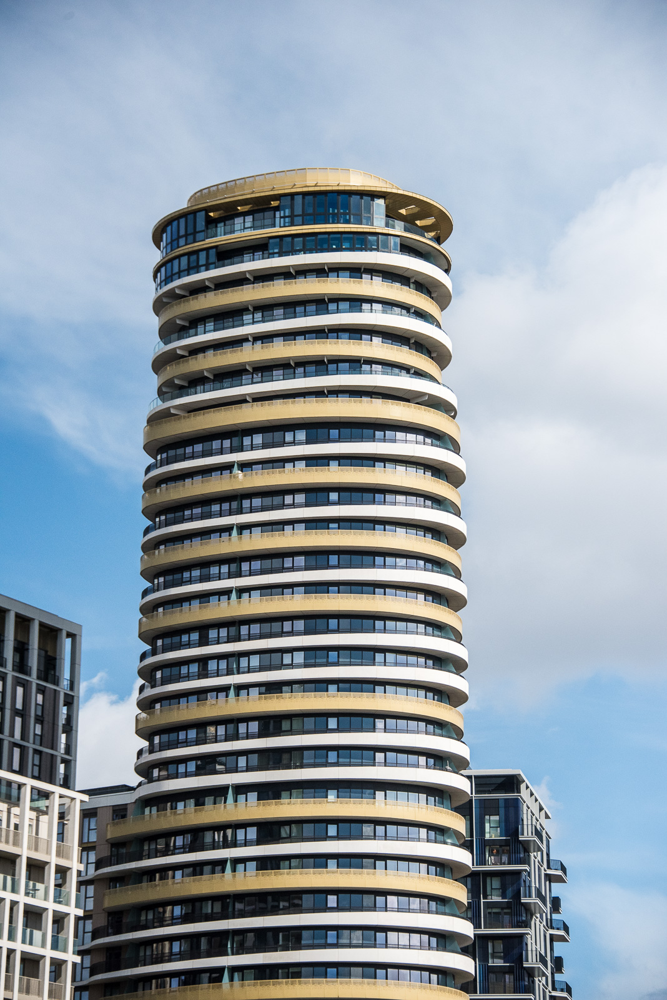
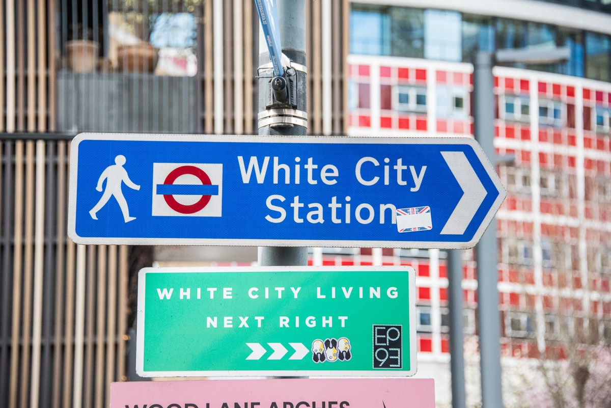
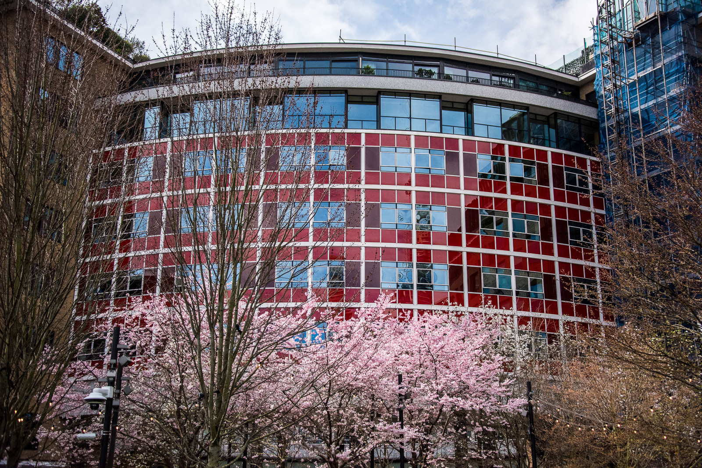
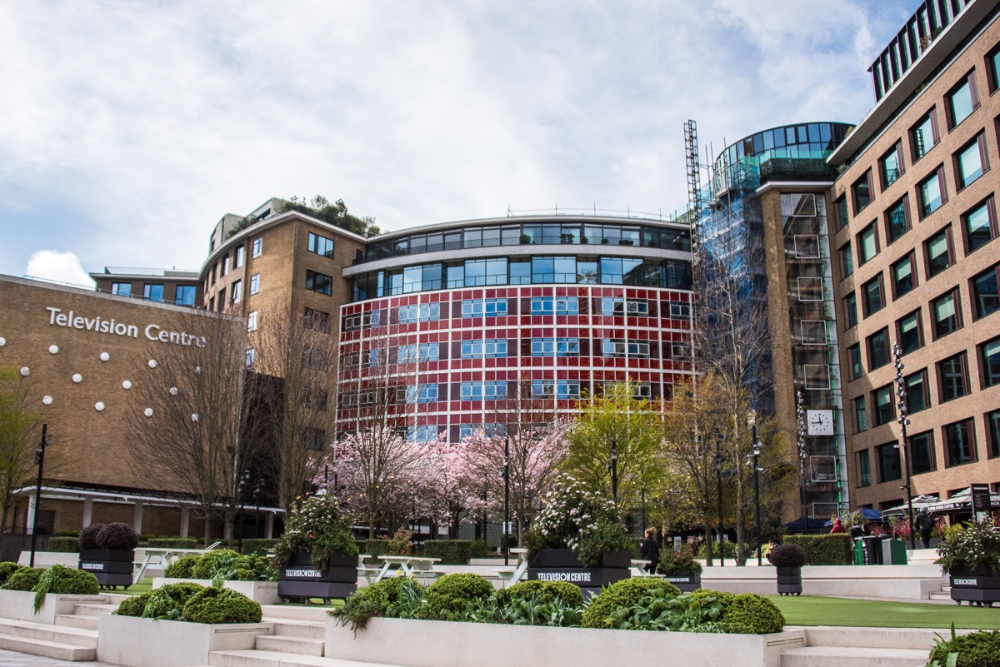
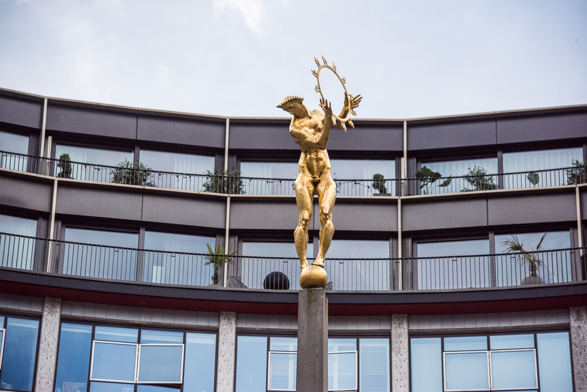
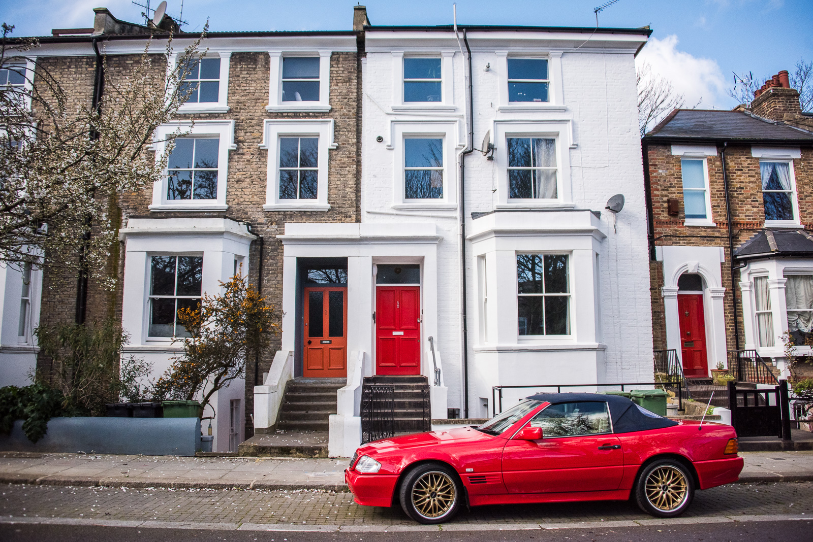
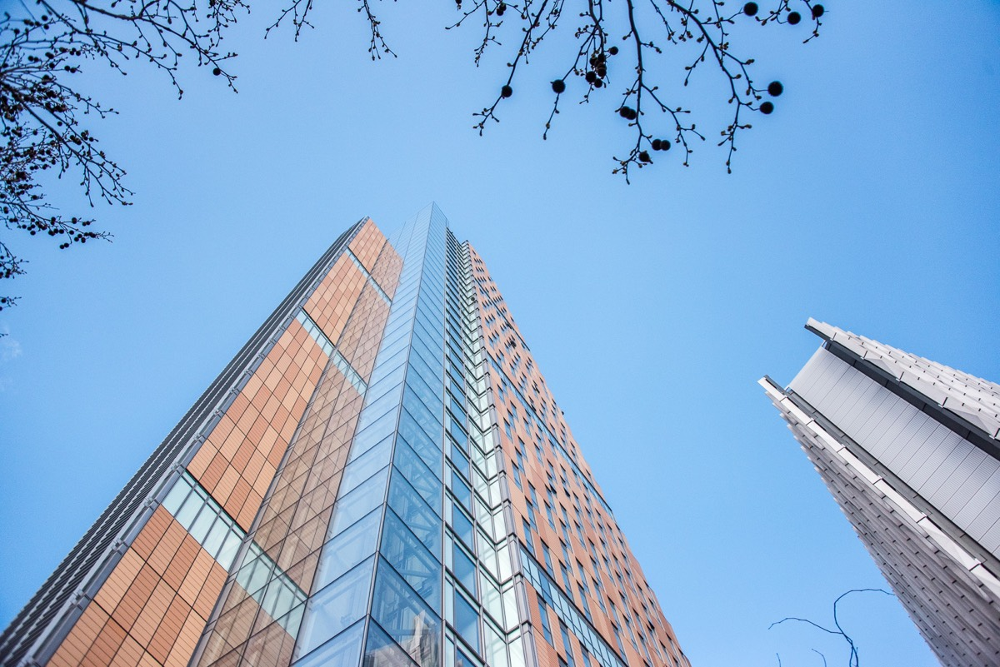

Imre Kiralfy:
From Budapest to a West London Brickfield
The guide lives locally and has been running walks around White City for several years. She opens by asking the group a question she considers fundamental: does anyone know where they are? White City has changed so dramatically and so recently that people arrive at Shepherd's Bush and find they don't recognise it. The answer, she says, is a brickfield — if you had been standing here in the 1900s, you would have been in a field of clay, looking at agricultural land and the railway viaduct crossing it. White City was one of the last areas of West London to be developed, and it took a Hungarian-born theatrical impresario to do it.
Imre Kiralfy was born in Hungary in 1845. His family, having backed the wrong side in the Hungarian Revolution, left the country; the children became child performers. Imre and his brother emigrated to the United States in the 1860s and made a fortune in spectacle theatre — enormous musicals with large casts, elaborate special effects and, by their own cheerful admission, very weak plots. They lived on Washington Square, New York.
In 1893, Kiralfy was producing a show in Chicago at the World's Fair — the largest international exhibition America had seen. The fair was known as the White City: every building painted white, electrified for the first time, lit up at night. Kiralfy saw it, and decided to change his career. He began organising international exhibitions. Starting at Earl's Court between 1895 and 1903, he then bought 140 acres on the other side of what is now Wood Lane, as part of a consortium, and set about building something even more ambitious.
The Franco-British Exhibition:
Eight Million Visits in Six Months
The Franco-British Exhibition opened in May 1908. Everything on the 140-acre site was painted white, inspired by Chicago. Everything was electrified. In a London that was at the time filthy with coal smoke and pollution, the effect of arriving at a gleaming white exhibition city must have been, as the guide puts it, mind-boggling.

Forty pavilions. A scenic railway. Several miles of walkways. A waterway you could boat along. The Court of Honour at the entrance, inspired by Mughal architecture — not built in marble, like Udaipur, but in a steel frame covered in concrete, painted white, with stucco applied to create exotic decorative effects. The message was deliberate: you entered through a vision of India, immediately reminded of Britain's control of the subcontinent.
The flip flap — two arms each 200 feet long, with carriages at the ends that rose slowly and then tipped over, giving views allegedly as far as Crystal Palace. A million people rode it. Two popular songs were written about it in 1908 alone.
There was also Merryland — the entertainment zone — which contained, as was entirely normal for international exhibitions of the period, villages where indigenous people from colonised territories were displayed as living exhibits. France had a West African village; Britain had displays for Canada and Australia. The Japan-British Exhibition of 1910 included villages from Japan's colony of Formosa, and from the Ainu people of Hokkaido. An 18-year-old Ainu man died during the exhibition and is buried in an unmarked grave in Margravine Cemetery in Hammersmith. At the time, there was no publicity about this; it only emerged through historical research decades later.
Eight million visits in six months. Then 1914 happened. The business model was broken. The weapons that had been on display at the exhibitions were suddenly in use. The site was never the same again.
Six exhibitions were held here between 1908 and 1914. After the First World War, a few more followed, but gradually the 140 acres were broken up — into housing, television centre, and the stadium that would eventually be used for greyhound racing.
Wood Lane Station &
£170 Million from Westfield
The older building on this stretch — brick, Victorian, easy to mistake for a warehouse — is the oldest existing power generation plant for the London Underground. Shepherd's Bush was the terminus for the Central London Railway, which opened in 1900 and is now the Central line. This was why Kiralfy could attract eight million visitors to his exhibition: public transport made the suburbs reachable. The exhibition guide had ten pages devoted to the different ways you could arrive by public transport.

Wood Lane Station, on the Hammersmith & City and Circle lines, was opened in connection with Westfield, which opened in 2008. As part of its Section 106 agreement — the community contribution a major development makes — Westfield paid £170 million for public transport improvements in the area. TfL contributed a further £30 million. The area was previously fragmented by the Central line cutting through it, with very few bridges. The station, designed by Ian Ritchie Architects (who also worked on Jubilee line stations), was the first station built on an existing line for seventy years — and because it sits above both the Central line and other infrastructure, it has no escalators, making it lighter. It is one of the more successful pieces of architecture in the area, the guide considers.
Television Centre:
The Question Mark Building
After the Second World War, the London County Council wanted to use its compulsory purchase powers to acquire fifteen acres on this site for housing. They were not pleased to discover that the BBC was looking for land on which to build a dedicated purpose-built television centre — and that this was the only piece of land in London, close to public transport and large enough for the purpose, that worked.


The BBC won the argument, acquired the land in 1949, and engaged an architect called Graham Dawbarn — known for designing airports — to design something entirely new. Nobody had built a television centre before. The legend, which may or may not be true, is that Dawbarn drew a question mark, because the design challenge was so great that he had no other starting point.
Television Centre, when you look at it, curves around like a question mark. This was not accidental. The circular form placed the studios around a central ring; behind the studios was an inner circular walkway for moving scenery; behind that, a road following the same curve; and behind that, the scenery construction block. Because everything was broadcast live in the early decades, the scenery was constantly in motion — the circular layout made that possible at speed.
The building opened in 1960. The spur visible from the road was added in 1970. Building continued into the 1990s. At its peak, nine thousand people worked here — it was effectively a village inside Shepherd's Bush, entirely separate from the surrounding streets, a gated community. The Graham Norton Show and Loose Women are still produced here in three studios retained by the BBC after the 2012 sale.
The BBC sold Television Centre in 2012 to Stanhope and Mitsui Fudosan for £200 million — a figure that seemed, given the listed building constraints and the cost of preservation, like something of a bargain. The development now contains approximately 1,000 homes, retail, a Soho House, and those three working studios. The affordable housing — around 11% of units, reflecting decisions made under a previous political era — is located on the other side of the railway tracks. The original mosaic and handrails inside are restored. The bronze figure by the entrance, Helios spreading the light of television to the world, is now in gold leaf rather than the original gold paint.
Privately Owned
Public Spaces
The walk passes through four POPs — privately owned public spaces. You walk through them feeling as though you are in a public road or park. You are not. The space is owned by a developer. If a security guard asks you to leave, you have to leave. Photography with an SLR camera in some of these spaces will bring a guard over almost immediately, because the developers control the image rights.

"I've taken local residents on this walk and people are genuinely shocked that they can walk through here. The idea is that porosity — people moving through — is a good thing. But not everybody feels comfortable in these spaces."
— The guide
The complication at Television Centre specifically: three studios have live television productions. Anti-vaxxers invaded the Loose Women studio while it was being broadcast, which raised difficult questions about the management of a POPS that also happens to be a live television facility.
The First Public Japanese Garden
in the United Kingdom
The garden in the park is the only surviving original structure from all six exhibitions held at White City between 1908 and 1914. Everything else — the forty pavilions, the flip flap, the Court of Honour — is gone. The Japan-British Exhibition of 1910 created two gardens. The Garden of the Floating Isle is now somewhere underneath the White City Estate. The Garden of Peace survived, became a public park, and was restored for its centenary in 2010 by Japanese garden designers.
The Japan-British Exhibition of 1910 was the only one of the White City exhibitions organised in cooperation with a government. Japan contributed the equivalent of £8 million in today's money and sent officials to work on it for years. Japan in 1910 was a rising world power — the opportunity to project that power in London, then one of the greatest cities in the world, was too significant to miss. They also wanted to correct a British stereotype of Japan as uncivilised and warlike. They chose gardens. An astute decision when dealing with the British.
A Zelkova japonica — Japanese elm — was planted for the 1910 exhibition; it is still there, behind its substantial protective fence. The Chokushimon Gate originally here was moved to Kew Gardens, where it remains. The guide suggests, without great seriousness, that perhaps they should ask for it back.
The so-called Ten Pudding Hills — three mounds intended to represent Japanese mountains, including Mount Fuji — are covered in AstroTurf, which the guide considers may not fully achieve the desired effect.
Zeilenbau, Warren Hastings
& the Batman Block
The White City Estate is Hammersmith and Fulham's largest council estate — over 2,000 homes, begun in the mid-1930s, and the first major London estate to implement ideas the Labour-controlled London County Council had brought back from visits to housing in Germany and Austria. The guiding concept was Zeilenbau: blocks aligned north-south, so that light enters from the east in the morning and west in the evening, with generous spacing between them to allow fresh air through.

The LCC of the 1930s, looking back at the White City exhibitions as imperial enterprises, named the estate's roads after British imperial territories: South Africa Road, Australia Road. The blocks themselves are named after men who served the British Empire in military, exploratory or administrative capacities.
Hastings House is named after Warren Hastings, first Governor-General of Bengal. Lugard House is named after Frederick Lugard, first Governor-General of Nigeria and Uganda. One block is called Batman — not after the comic character, but after William Batman, a man associated with the founding of Melbourne who is also linked to the genocide of Tasmanian Aboriginal people.
People are aware of these connections, the guide says, but have other priorities. Nobody is actively campaigning to change the names. The exception: Mandela Block was renamed in honour of Nelson Mandela. That one is new.
The communal facilities at the centre of the estate — health centre, nursery, adventure playground, housing offices — are now the subject of a contested regeneration plan. Planning permission was recently granted for approximately 250 additional homes on the land, half affordable and half private sale, with the private sales funding renovation of the public spaces. Some residents support this; others feel the communal lung of the estate is being sacrificed.
The 1908 Olympics &
Dorando Pietri's Wrong Turn
The 1908 Olympics were not supposed to be in London. They were supposed to be in Rome, but Mount Vesuvius erupted in 1906 and Italy was no longer able to host them. The British Olympic Committee went to Imre Kiralfy and asked whether he could fit a stadium into his exhibition site. He said yes and paid for it himself, in exchange for the gate receipts.
The standout event of the 1908 Olympics was the marathon, and it produced one of the most dramatic finishes in Olympic history. The race started at Windsor Castle. The distance was set at 26 miles and 385 yards — specifically calculated to bring the finishing line in front of the royal box inside the stadium. This became the standard marathon distance.
The first runner to enter the stadium was an Italian called Dorando Pietri — small, improbable-looking, with a handkerchief on his head. He had overtaken the South African front-runner on the roads outside. When he entered the stadium, exhausted and disoriented, he began running the wrong way around the track. He was redirected. He fell over. He got up. He fell again. At some point, someone helped him to his feet. He crossed the line first.
An American named Johnny Hayes came in second. The Americans — who had been in ongoing tension with the British judges throughout the games — objected that Pietri had been assisted. The objection was upheld. He was disqualified. Hayes won. But for the British public, Pietri was the hero — perhaps partly, the guide suggests, because they didn't particularly want an American to win. Queen Alexandra gave Pietri a gold cup. The close where the memorial stands is named Durando Close, after the man who was disqualified rather than the man who actually won.
The stadium served its purpose for the Olympics, then hosted greyhound racing from the 1920s until its closure in 1982. One 1966 World Cup match was played here — Uruguay vs France — because Wembley had a dog race scheduled and did not want to give up the revenue. The stadium was demolished; the memory is preserved in a developer's placemaking installation inside what is now White City Place.
Imperial College's 23 Acres
& the Fins of Recycled Steel
Imperial College has acquired 23 acres in White City — north and south of the A40 — in a development programme that will eventually see around £2 billion invested in the campus. Unlike UCL at Stratford or Central Saint Martins at King's Cross, Imperial owns its land outright rather than holding long-term leases. The model, the guide suggests, is closer to MIT or Stanford: creating assets that generate income and reduce dependence on government funding and student fees.

The northern campus is largely complete. The residential tower at 88 Wood Lane is purely for rent, partly commercial and partly for key workers at the Imperial-run hospital. The Sir Robert Weston Building — the one with the distinctive fins — is dedicated to biomedical engineering and won a RIBA Regional Award. The fins are made from GGBS: ground granulated blast-furnace slag, a waste product of the steel industry. The material that made the donor's money is on the side of the building that bears his name.